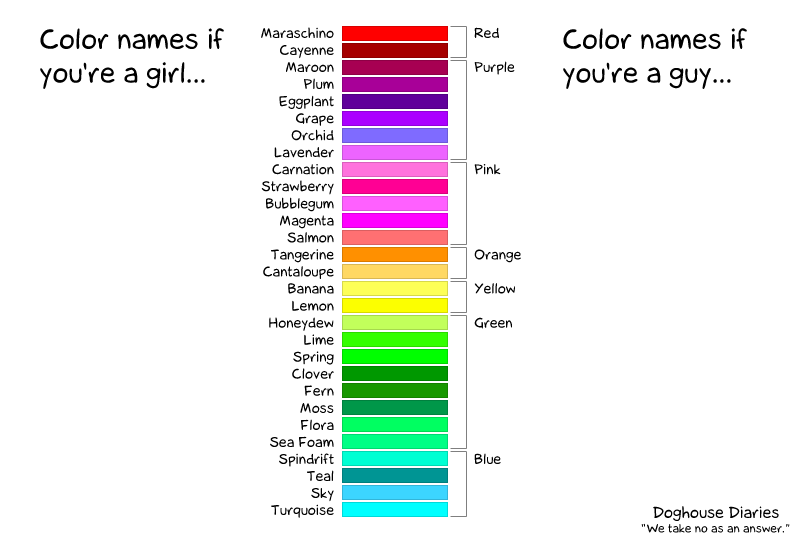

In Scribus gibt es verschiedene Methoden, Füllfarben und Farbpaletten zu erstellen, zu importieren und zu verwalten. Darüber hinaus hat Scribus das Farbkreis-Plugin, mit dem man Farbharmonien erstellen und sogar für Farbenblinde testen kann.
Die Antwort auf diese Frage ist eng verwandt mit der Antwort auf die grundsätzliche Frage »Was ist Farbe?«. Darauf gibt es keine einfache Antwort, da »Farbe« auf so viele Weisen beschrieben werden kann. Zum Beispiel als eine Kombination von Wellenlängen, eine Kombination von Farbwerten innerhalb eines bestimmten »Farbmodells«, als eine Kategorie anhand ästhetischer Regeln usw. Deshalb wurden im Laufe der Zeit viele verschiedene sogenannte »Farbmodelle« entwickelt, von denen viele Teil der »Farblehre« wurden. Diese ist selbst eine »Meta-Lehre«, da sie von vielen Disziplinen beeinflußt wird. Darunter Physik, Neurowissenschaft, Biologie, Mathematik, Ingenieurwesen und sogar Kunst, Handwerk und Literatur. »Farbe« ist eine der wenigen Fälle, bei denen Künstler wie Johann Wolfgang von Goethe oder Albert Henry Munsell einen entscheidenden Beitrag für die Lehre leisteten.
Nutzer von Grafik-Programmen müssen die Einzelheiten der Farblehre nicht lernen, aber gewisse Grundkenntnisse schaden auch nicht. Grundsätzlich hilft das Verständnis der oben genannten Punkte viel, wenn man mit Farben arbeitet. Der Cartoon zeigt humoristisch, um was es geht:
|  |
Wie oft in guten Cartoons steckt auch hier etwas Wahrheit dahinter. Und zwar, daß es verschiedene Wahrnehmungen und Einteilungen von Farben gibt, die sehr individuell sind. Man stelle sich zwei Personen vor, die eine im »Mädchen«-, die andere im »Jungs«-Spektrum, die am Telefon über die Auswahl einer Farbe reden – es wird einfach unmöglich sein, da sowohl die Farbnamen als auch die Wahrnehmung (subjektiv) unterschiedlich sind. Deshalb sind vordefinierte Farbpaletten eine Möglichkeit, über Farben zu kommunizieren ohne subjektive Farbmodelle oder eine philosophische Farblehre zu verwenden. Aussagekräftige Namen der Farben können dabei die Kommunikation noch erleichtern.
Farbpaletten können auch dazu verwendet werden, die Farben für ein einheitliches Erscheinungsbild eines Projekts zu definieren.
In der Praxis bedeutet dies, daß man nur die Farben einer Farbpalette und die selbst kreierten (und die, die man zu der Palette hinzugefügt hat) als Text-, Füll- und Linienfarben oder Farbverläufe verwenden kann.
Scribus kommt von Haus aus mit einer Vielzahl Farbpaletten. Diese Farbpaletten dienen unterschiedlichen Zwecken, die auf verschiedenen Seiten beschrieben werden. Es gibt Paletten in den verschiedensten Größen, die von »Scribus Basic«, einer Reihe elementarer RGB- und CMYK-Farben, bis zu z.B. »X11« gehen, die eine große Anzahl an (RGB-)Farben enthält.
Die Farbpaletten in Scribus können vier Farbarten enthalten, die durch verschiedene Symbole gekennzeichnet sind:
|
RGB-Farben: Diese Farben werden im RGB-Farbmodell definiert. Jede Farbe entsteht durch die Addition der drei Hauptfarben Rot, Grün und Blau. | ||
|
CMYK-Farben: Die Farben des CMYK-Farbmodells beschreiben die vier Tintenfarben im Farbdruck: Cyan, Magenta, Gelb und Schwarz. | ||
|
Schmuckfarben: Eine Schmuckfarbe kann im RGB- oder CMYK-Farbraum angelegt sein, der Unterschied ist, daß sie in einem PDF oder einer PostScript-Datei mit ihrem Namen gespeichert wird. Der Name verweist auf eine Referenz in der »realen Welt«, wie z.B. einem gedruckten Farbrad. Eine Druckerei kann damit eine bestimmte Tinte mischen oder kaufen, die genau den Spezifikationen entspricht. Jede Schmuckfarbe erfordert eine eigene Druckplatte, weshalb man sie sehr vorsichtig einsetzen sollte, da dies die Druckkosten in die Höhe treibt. Ein typischer Einsatzzweck sind Firmenlogos. Der rote Punkt neben dem Farbmodell-Zeichen (RGB oder CMYK) zeigt eine Schmuckfarbe an. | ||
|
Registrations-Farbe: Dies ist eine ganz besondere »Farbe«, die für Registrierungs-Zeichen genutzt wird. Dadurch können Drucker feststellen, ob ein Vierfarb-Druck erfolgreich war. Obwohl sie als CMYK-Farbe angezeigt wird, besteht sie aus so vielen Farben wie es Druckplatten benötigt. Jede Farbpalette kann nur eine Registrations-Farbe haben. Sie wird durch ein »Fadenkreuz«-Zeichen angezeigt. | ||
|
Wenn man mit aktiviertem Farbmanagement arbeitet, sind wahrscheinlich einige oder sogar alle Farben außerhalb des Fabspektrums. Zum Beispiel kann aufgrund des gewählten ICC-Profils eine Farbe nicht von einem Farbmodell in ein anderes »übersetzt« werden, und es kann zu Farbveränderungen kommen. In dem Fall sieht man eine Warnung neben der Farbe. |